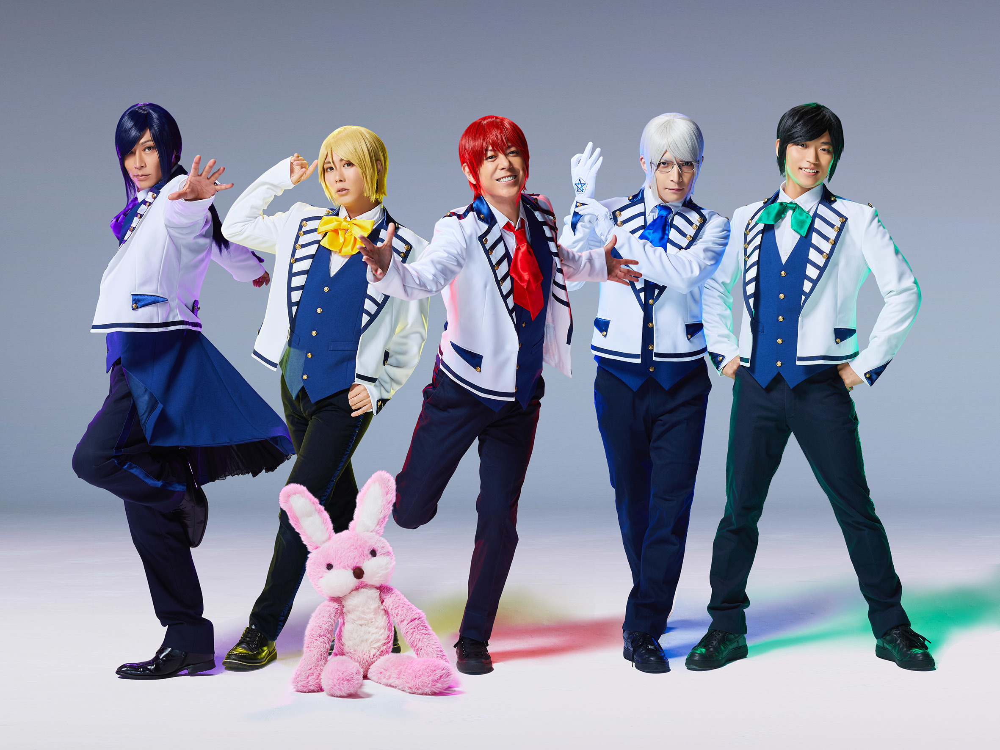
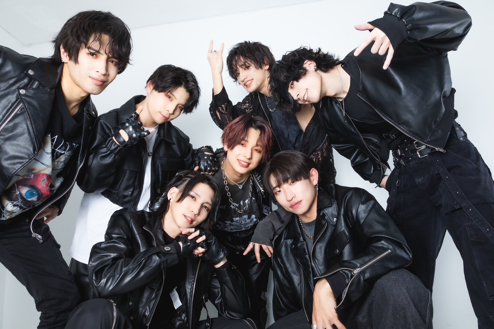
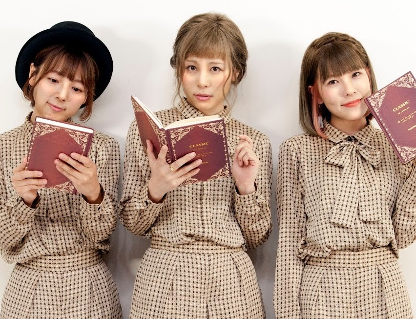

ダンス
アルスマグナ

5人と1匹から構成された
2.5次元コスプレダンスユニット
これを見て？？？？？と思った方
ぜひ一度、彼らのシンクロ率120%のダンスをご覧ください！
＜おすすめ楽曲＞
+♂(プラス男子)／唯一、愛ノ詠／
いーあるふぁんくらぶ
アナタシア

ロストワンの号哭／Beyond the way／KING
ブレイクダンスやアクロバットを中心としたダンスが武器
常に新しいことや難しいことに挑戦している熱いグループです！
ロストワンの号哭／Beyond the way／KING
しゃばだばSTEP

すきなことだけでいいです／いかないで／
パーフェクト生命
ポップでキャッチーな振付が特徴なグループ
その面白さとは裏腹に、超がつくほど難しいフォーメーション
やさしい雰囲気の中、繰り出される彼女たちの技は唯一無二なものです！
すきなことだけでいいです／いかないで／
パーフェクト生命